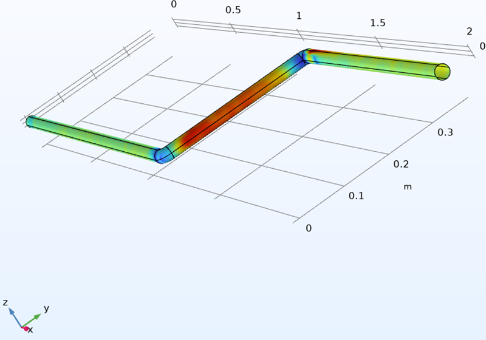
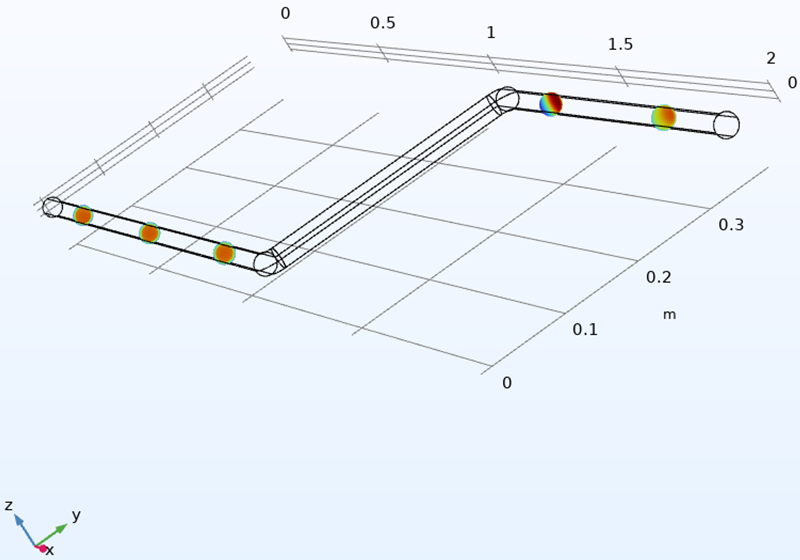
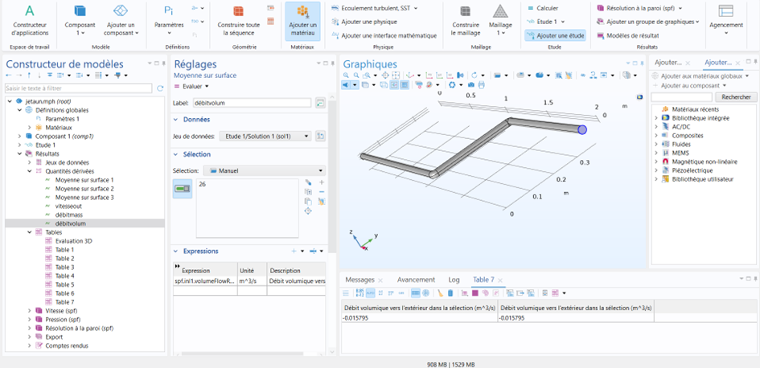

Recherche scientifique
Exploiter une littérature récente et la synthétiser dans un article structuré, rédigé en anglais.
PL. 09 · PROJET DE RECHERCHE · 4E ANNÉE · 2026
Évaluation technico-économique d'un carburant aviation durable (SAF) produit à partir de plusieurs ressources, rédigée sous la forme d'un article scientifique en anglais.

01 · LE SUJET
La décarbonation de l'aviation repose en grande partie sur les carburants aviation durables (SAF), utilisables dans les avions actuels sans modification majeure. Mais les premières filières dépendent souvent d'une seule ressource, ce qui limite leur déploiement.
Nous avons étudié un SAF innovant, produit dans une bioraffinerie hybride à partir de déchets ménagers, de jatropha et d'effluents d'élevage. Prometteur sur le papier, il n'existe encore qu'au stade de la simulation.
Notre posture : celle d'ingénieurs conseillant la direction d'une compagnie aérienne. Rester objectifs, et évaluer si ce carburant est réellement viable, techniquement, économiquement et réglementairement.
02 · LA DÉMARCHE
Les filières de production existantes, leurs ressources, leur maturité et leurs limites.
Le parcours de qualification technique (normes ASTM) et de durabilité (CORSIA, ReFuelEU), traçabilité comprise.
Ressources, économie, intégration technologique, réglementation et durabilité, synthétisés dans une matrice des risques.
Une simulation CFD de l'alimentation carburant d'un A320, puis l'analyse de la viabilité économique de la filière.
03 · L'ÉTUDE TECHNIQUE
Un SAF peut être chimiquement compatible et pourtant se comporter différemment dans les conduites de l'avion. Nous avons donc modélisé sous COMSOL un tronçon de la ligne qui alimente les moteurs d'un A320, avec ses coudes, en écoulement turbulent.
Quatre carburants ont été comparés : kérosène pur, deux mélanges et SAF pur. La simulation montre un écoulement légèrement moins favorable avec le SAF, notamment dans les coudes.
Nous en avons tiré une solution concrète : ajouter des pompes de gavage intermédiaires, installées lors des grandes visites de maintenance. Une adaptation simple et peu coûteuse face au remplacement de la flotte.
04 · EN IMAGES


05 · COMPÉTENCES ACQUISES
Exploiter une littérature récente et la synthétiser dans un article structuré, rédigé en anglais.
Modéliser un écoulement turbulent dans une conduite sous COMSOL et comparer plusieurs fluides.
Comprendre le parcours de qualification d'un nouveau carburant et les cadres de durabilité.
Identifier et classer les risques d'un projet industriel dans une matrice.
Relier un résultat technique à son coût et à sa faisabilité pour un exploitant.
Distinguer ce qu'une simulation promet de ce qui reste à démontrer en conditions réelles.
06 · OUTILS UTILISÉS
07 · EN CONCLUSION
Ce projet m'a plongée au cœur d'un enjeu majeur pour mon secteur : décarboner l'aviation. J'y ai appris à évaluer une innovation dans toutes ses dimensions, de la simulation à la certification, en passant par les risques et l'économie.
Et surtout à garder un regard objectif : un carburant prometteur en simulation doit encore faire ses preuves dans le monde réel.